>w< 深度专栏与使用指南
文章专栏
按使用场景查找 15 种预设布局教程，以及文字自动化、剪藏整理、表格公式和连接设置的实用指南。
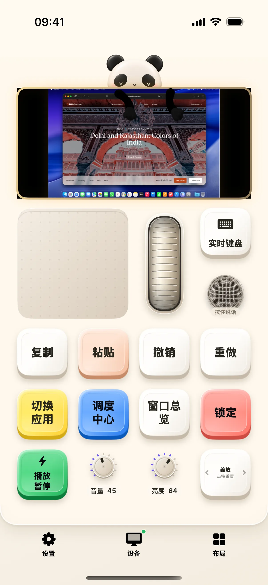
工作布局教程：打开键盘、输入文字，再检查撤销与重做
从工作桌面进入实时键盘，练习文本输入、撤销与重做，并找到编辑当前桌面的入口。
阅读全文 →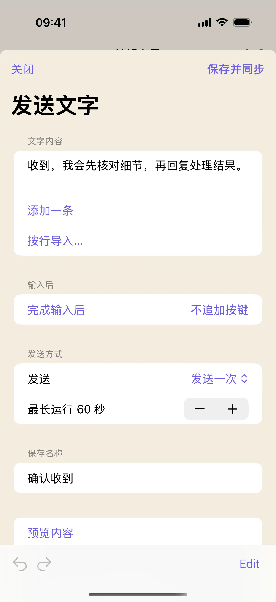
把常用回复做成按钮：从输入文字到预览、同步
在奶猫妙控里新建文字按钮，填写常用回复，设置是否追加 Enter，并通过内容预览和 Mac 空白文档检查输入结果。
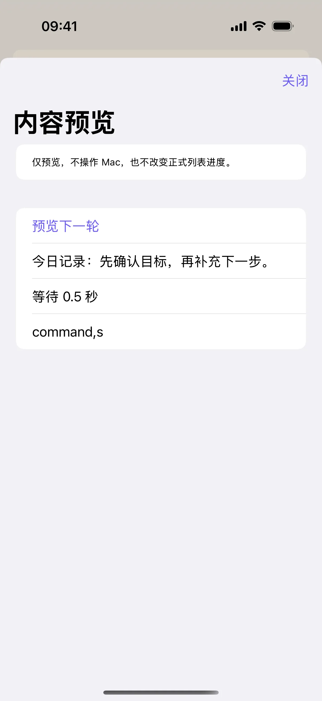
做一个“记录并保存”按钮：文字、等待和快捷键串起来
把文字按钮扩展成自动化，按顺序加入等待和 ⌘S，学习编辑步骤、预览内容、试运行与排查焦点问题。
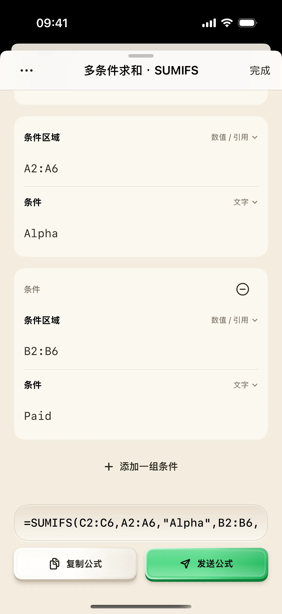
用 SUMIFS 汇总项目支出：一步步配置两个条件
下载五行练习数据，在奶猫妙控长按 SUMIFS，配置项目和付款状态两个条件，核对公式、复制结果并处理分号分隔符。
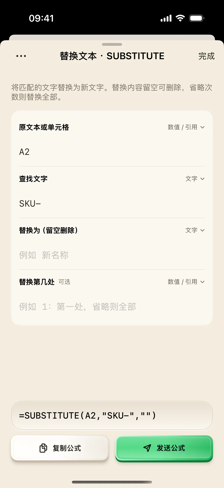
清理表格里的商品名称：用 SUBSTITUTE 和 TRIM 分两步检查
从带 SKU- 和多余空格的练习数据开始，用奶猫妙控生成 SUBSTITUTE 与 TRIM，分别检查删除文字、保留空字符串和指定替换次数。
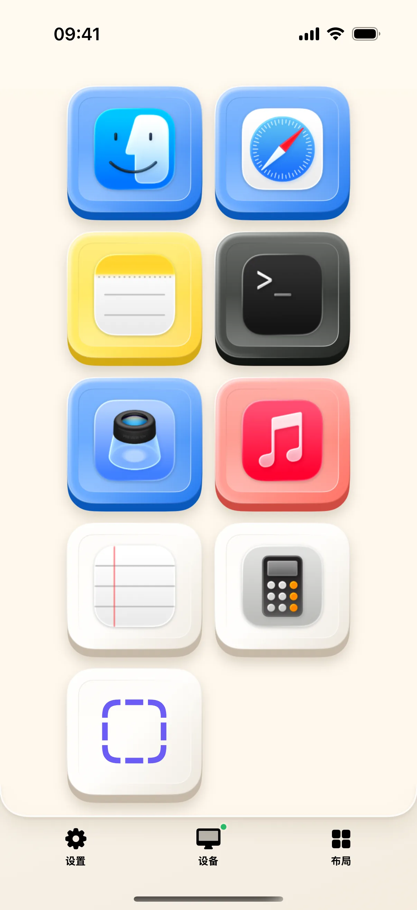
启动器布局教程：添加一个 Mac App，再更换已有按钮
从真实应用列表添加按钮，认识长按编辑与“更换 App”，并在 Mac 上核对启动结果。

浏览器布局教程：输入网址、切换标签页，设置启动浏览器
演示网址输入面板、标签页操作和“切换后动作”，区分默认浏览器与指定 App。

财务布局教程：计算 0.1＋0.2，再一步步生成 SUMIFS 公式
从本地计算器到公式参数面板，填写范围、核对生成文本，并区分复制与发送。

文本预编辑与语音速记实战
用奶猫妙控在手机或平板上语音听写，随时修饰草稿，再将整段文字精准发送至 Mac

超低延迟串流：掌中接管 Mac 桌面
用手机或平板低延迟查看 Mac 桌面、操作虚拟触控板、双向惯性滚动，并灵活运用多种输入模式

从零定制你的专属副控小键盘
从预置模板开始，按需组合按键、旋钮、触控板与 Mac 画面预览，打造专属于你的掌上小键盘与副控工作台
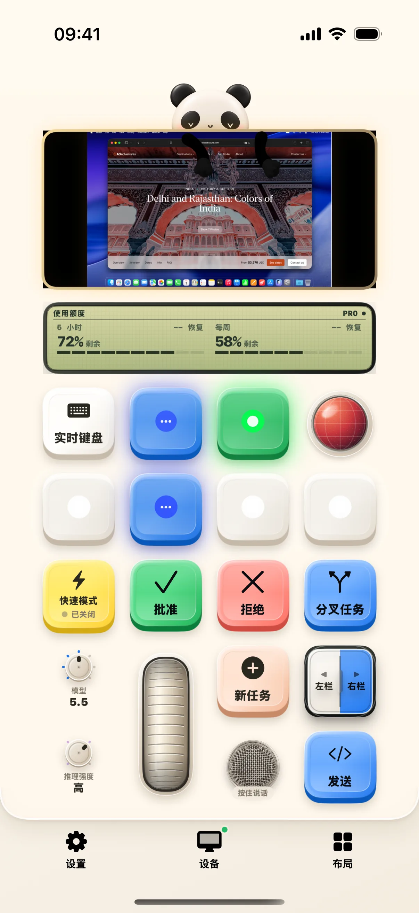
氛围编程布局教程：选任务、打开输入，再检查模型与额度
认识任务键的单击与双击，打开实时键盘，并核对当前任务的模型、推理强度和额度。
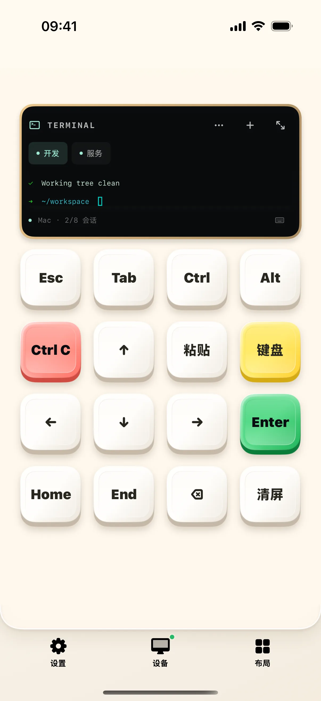
终端布局教程：新建会话、改名、打开全屏，再安全结束
从终端桌面操作会话标签、命名与全屏键盘，用只读命令检查真实 Mac shell。
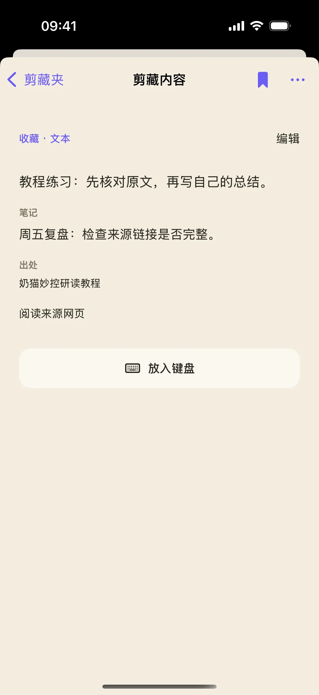
剪藏不只存一句话：把原文、笔记和出处一起整理好
手动建立一条带笔记和来源链接的剪藏，保存后检查出处，再用笔记关键词找回内容，适合阅读摘录和资料复盘。
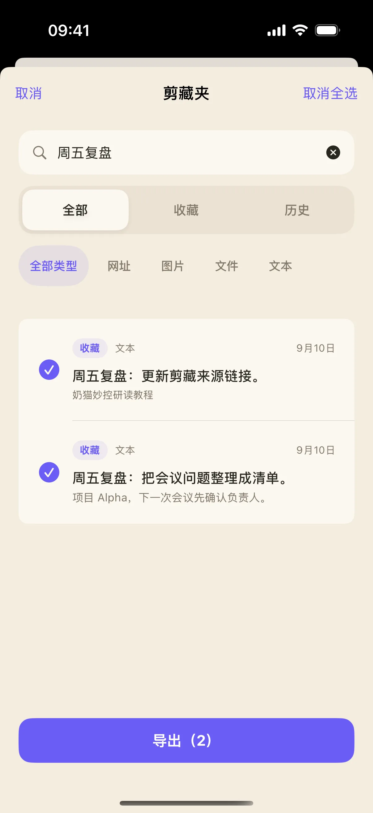
从一堆剪藏里挑出本周资料：筛选、跨筛选选择与导出
用关键词和链接类型筛选剪藏，跨筛选选择两条资料，再通过 iOS 分享面板导出文字与附件，完成一次可检查的资料整理。
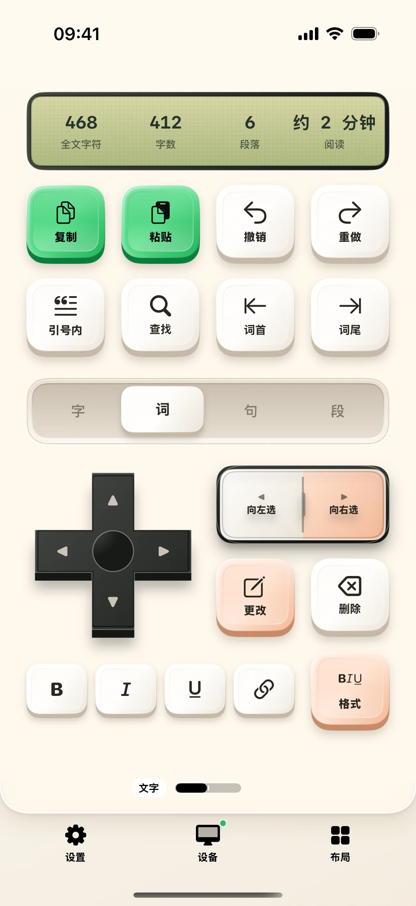
写作布局教程：按段移动、查找正文，再切到格式桌面
用一份短文练习字词句段范围、文内查找和格式页，按编辑器实际能力核对结果。
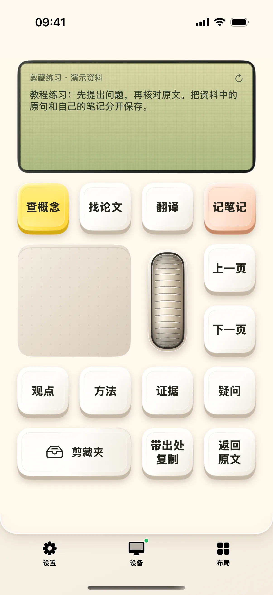
调研布局教程：把原文与笔记分开保存，再找回这条剪藏
从当前选中文字到手机剪藏夹，演示添加原文、补充笔记、保存和查看详情。
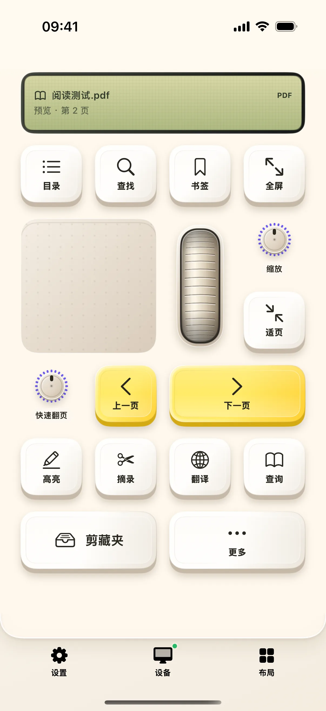
阅读布局教程：翻页、搜索目录，再跳到指定页
以 Mac 上的 PDF 为例，逐步打开章节目录、筛选章节和页码跳转面板。
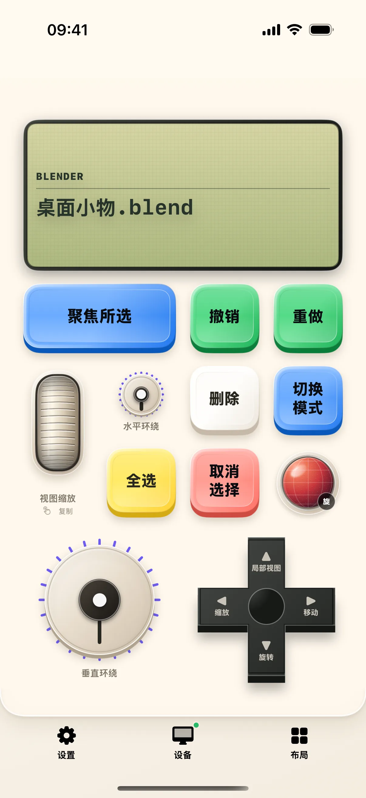
应用创作台教程：用 Blender 检查适配、选择与视角控制
先确认前台软件与控制名称，再用 Blender 默认键位做选择、模式和视角练习。
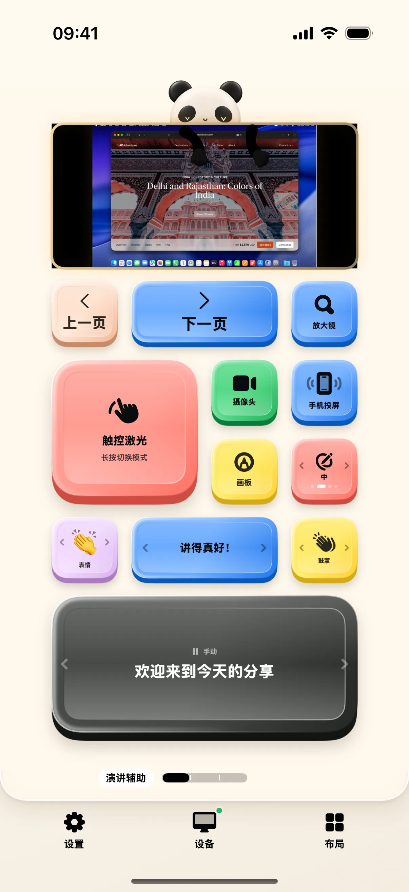
演示布局教程：设置摄像头浮窗，用计时器记录分段
长按进入摄像头与投屏设置，再到演讲计时桌面开始计时、打点和暂停。
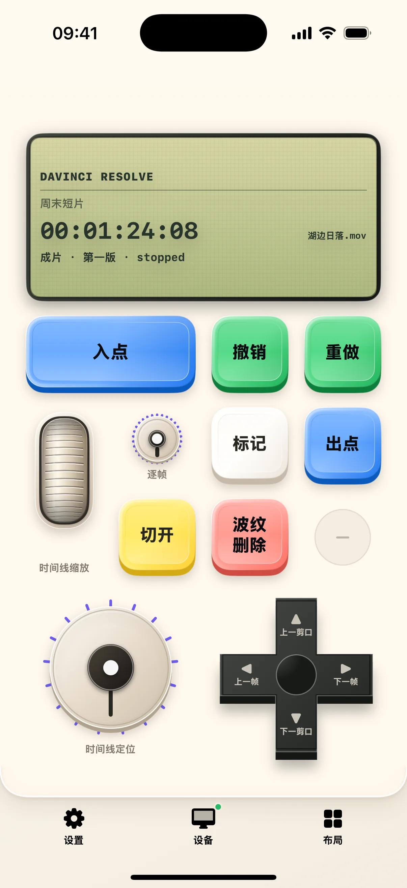
剪辑师的掌上副控：从 DaVinci 到剪映
深入了解奶猫妙控一体创作工作台：一套小键盘智能联动 DaVinci Resolve、Adobe Premiere Pro、Final Cut Pro 与剪映专业版
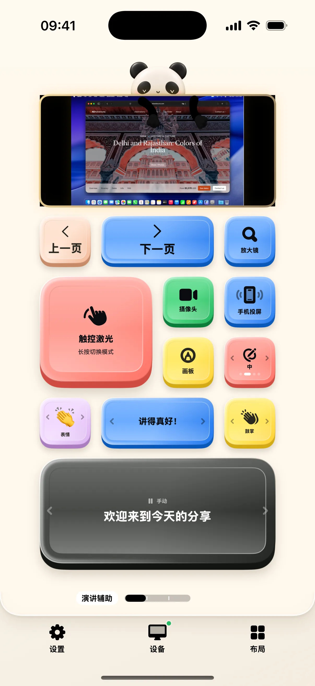
告别翻页笔：手机变身智能演说总控
用手机掌控 Mac 演示全流程：无线翻页、体感激光笔、屏幕放大镜、智能提词器、现场音效与互动弹幕
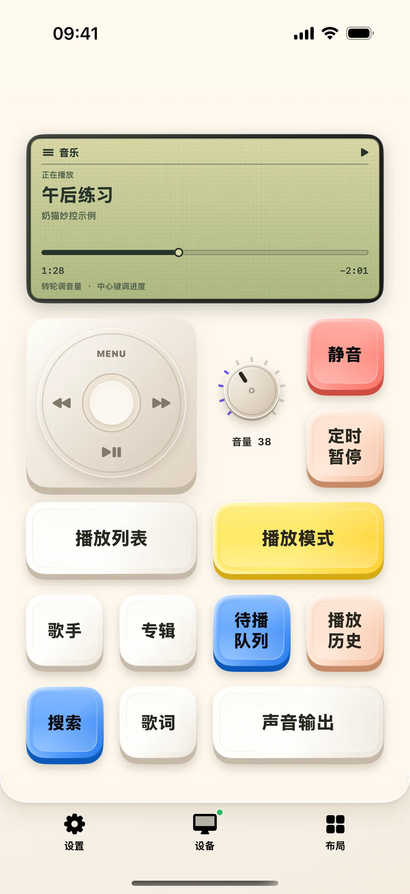
媒体布局教程：从正在播放进入菜单，调整进度与播放模式
认识点击轮、MENU、播放模式与进度页，按 Mac 播放器实际支持的能力操作。
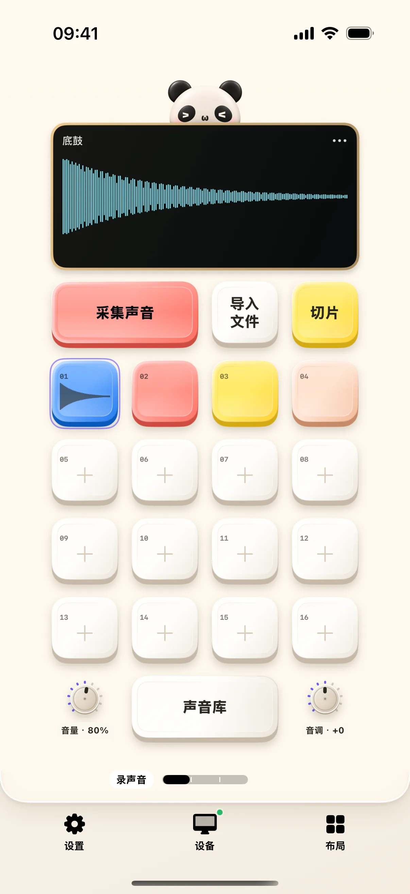
采样布局教程：载入示例声音，试听并调整声音衔接
从声音库开始，认识鼓垫与采样菜单，再打开声音编辑页检查音量、衔接和细调。
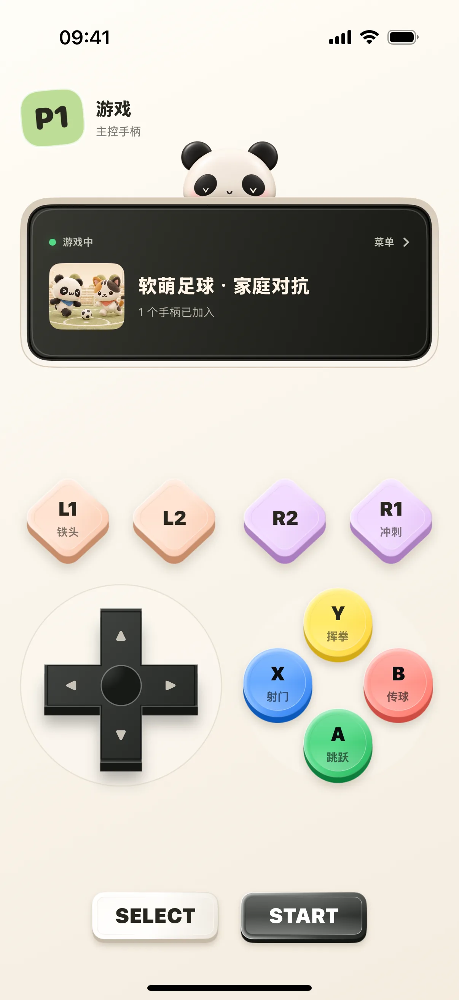
街机布局教程：进入大厅、认领手柄，再打开游戏菜单
说明 Mac 游戏大厅、手机玩家编号与 LED 菜单的使用流程，区分街机手柄与系统虚拟手柄。
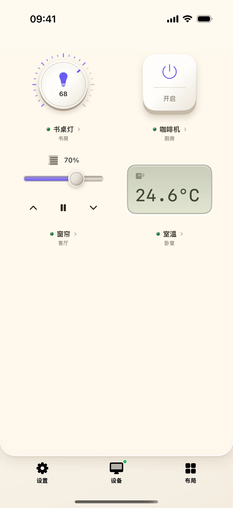
智能家居布局教程：连接 Home Assistant，添加灯并检查开关回读
从地址与令牌到设备组件，逐步绑定一盏灯，再区分按钮反馈和设备真实状态。

macOS 权限配置与安全连接指南
深入了解奶猫妙控 Mac 端的扫码配对、系统权限设置、专业软件智能识别与状态管理